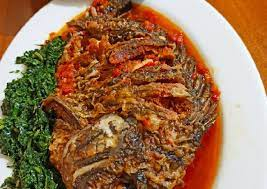
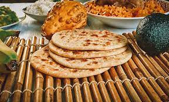

nyamachoma
A traditional Kenyan dish consisting of succulent roasted or grilled meat, typically goat, beef, or chicken, seasoned with aromatic spices and served with a side of Ugali (maize meal) and a fresh vegetable salad..
Last updated 3 mins ago

samaki
Pan-Seared Tilapia with Coconut Curry Sauce: Fresh tilapia fillets pan-seared to crispy perfection and served with a creamy coconut curry sauce infused with Kenyan spices, accompanied by fragrant rice or traditional chapati bread.
Last updated 3 mins ago

chapati
Kenyan chapati is a popular flatbread that is enjoyed throughout Kenya and is often served as a staple accompaniment to main dishes or eaten on its own .
Last updated 3 mins ago